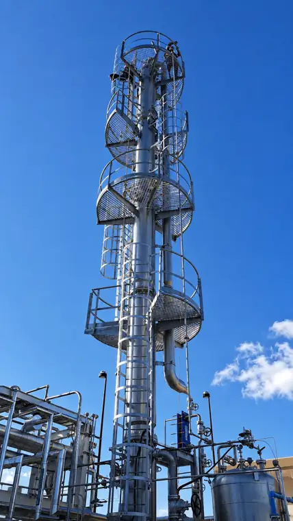

Reacción y mezclado
Sistemas integrados para operaciones de reacción, combinación y mezclado.
Producción modular | Integración
Instron Technologies diseña e integra skids de proceso modulares para servicios definidos de producción y procesamiento, combinando ingeniería de procesos, integración de equipos, sistemas mecánicos, instrumentación y automatización para una operación confiable en su planta.

Aplicaciones típicas
Los skids de proceso industriales reúnen equipos de proceso relacionados y sistemas de apoyo en un arreglo modular diseñado mediante ingeniería.
Sistemas integrados para operaciones de reacción, combinación y mezclado.
Procesos de adición controlada de materiales y formulación.
Sistemas de separación y recuperación para aplicaciones químicas e industriales.
Arreglos de equipos diseñados para el tratamiento y la separación de fluidos.
Sistemas de proceso térmico que integran equipos, servicios auxiliares y controles.
Sistemas de proceso para transferencia de fluidos, manejo de presión y manejo de gases.
Arquitectura de sistemas integrados
Cada área se define en conjunto con las demás, para que el skid funcione como un solo sistema en sitio.
Definir condiciones de operación, funciones de equipos, flujo de proceso y servicios auxiliares requeridos.
Desarrollar el arreglo de equipos, el arreglo general del skid, las tuberías y los requerimientos de acceso y mantenimiento.
Integrar mediciones de proceso, dispositivos de control, sistemas PLC/HMI y secuencias de operación.
Definir conexiones de servicios auxiliares, interfaces de equipos, requerimientos de instalación y responsabilidades del proyecto.
Establecer requerimientos de inspección, aceptación, puesta en marcha y documentación.
Tipos de equipos
Según el proceso, los skids modulares pueden integrar:
La selección de equipos depende de la aplicación, los requerimientos de operación y el alcance de ingeniería acordado.
Ingeniería y aceptación
Nuestra ingeniería facilita la coordinación de la procura, fabricación, integración y pruebas mediante documentación técnica definida, agrupada en cuatro paquetes: procesos; mecánica y skid; eléctrica, instrumentación y controles; y pruebas y entrega.
Controles e interfaces de operación
Conviene definir los requerimientos de automatización y monitoreo junto con el diseño del sistema de proceso. La coordinación temprana define la selección de instrumentos, secuencias de operación, alarmas, enclavamientos, interfaces del sistema de control y requerimientos de datos.
Nuestro equipo de Automatización industrial se encarga de la ingeniería de sistemas de control, y PlantON™ de Instron Technologies incorpora monitoreo, tendencias y reportes donde se requieren.
Calificación según el alcance
Los skids de proceso industriales se diseñan con base en los peligros del proceso, las condiciones de operación, los límites de los equipos y los requerimientos de instalación. Los requerimientos de seguridad, normas aplicables, obligaciones de pruebas y responsabilidades en sitio se establecen para cada aplicación y contrato.
Lecturas adicionales
Trabajos seleccionados
No divulgamos los nombres de nuestros clientes. Hay referencias disponibles a solicitud.




Crezcamos juntos
¿Planea un sistema modular de procesamiento para una instalación industrial? Comparta su aplicación, capacidad requerida, servicios auxiliares disponibles y requerimientos de integración, y nuestro equipo le ayudará a definir el alcance de ingeniería adecuado.